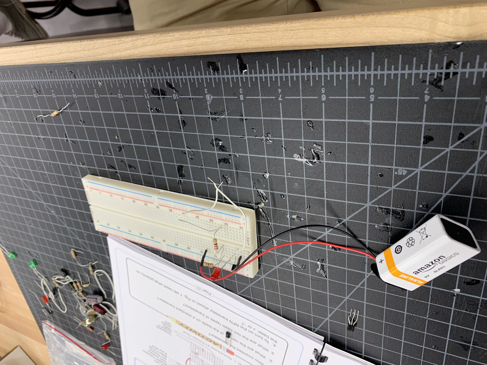
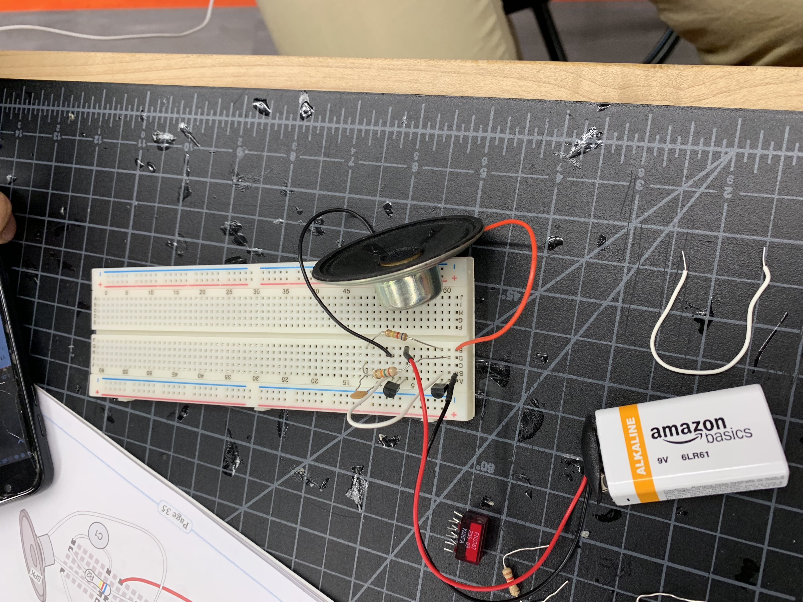

Wiggam Week 7: Soldering, Electronics & Arduino
We started out the class learning how to solder. Soldering takes patience and very steady hands. We started to work on a
digital clock. We had to go through the manual and put each peice in its exact spot and then flip the board and solder it in.
This process was tedious but it was worth it. After that we worked with electronics and Arduino. Specifically what we worked with was
the breadboard. We were tasked with making different models with the breadboard. This all lead into Week 9 where we fully used
Arduino boards.

